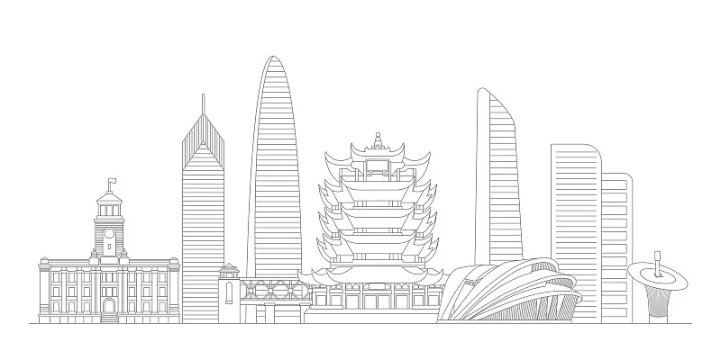

历史文化研学线
穿越千年时光，探索武汉的历史脉络。从黄鹤楼的诗词风韵，到湖北省博物馆的曾侯乙编钟，每一处都镌刻着武汉的文化基因。
在这里，青少年将学习楚文化的博大精深，感受辛亥革命的精神力量，在历史的长河中汲取成长的智慧。
科技创新研学线
走进中国光谷，感受科技的魅力与力量。从激光技术的前沿应用，到人工智能的创新成果，武汉正以科技引领未来。
青少年将在科研机构和高科技企业中亲身体验，激发创新思维，培养科学素养，为未来的科技梦想播种。
自然生态研学线
拥抱大自然，探索武汉的生态之美。从东湖的烟波浩渺，到木兰山的层峦叠翠，每一处自然景观都蕴含着生命的奥秘。
在这里，青少年将学习生态知识，参与环保实践，培养对自然的敬畏之心和保护意识，在绿水青山中健康成长。
现代都市研学线
体验武汉的现代活力，感受大都市的发展脉搏。从长江大桥的雄伟壮观，到楚河汉街的时尚繁华，武汉展现着独特的都市魅力。
青少年将了解城市规划理念，体验现代交通系统，感受武汉的开放包容，培养国际化视野和城市责任感。
精选研学路线



历史文化研学线
📅 行程：1天
👥 适合人群：中小学生
📍 地点：黄鹤楼、辛亥革命博物馆、湖北省博物馆
路线特色
- 登黄鹤楼，俯瞰长江，学习诗词文化
- 参观辛亥革命博物馆，了解中国近代历史
- 湖北省博物馆，欣赏编钟表演，感受楚文化魅力
科技创新研学线
📅 行程：1天
👥 适合人群：中学生、大学生
📍 地点：武汉光谷、武汉大学、华中科技大学
路线特色
- 参观光谷科技园区，了解光电产业发展
- 走进武汉大学，感受百年名校的学术氛围
- 华中科技大学实验室参观，体验前沿科技
生态自然研学线
📅 行程：1天
👥 适合人群：所有年龄段
📍 地点：东湖生态旅游风景区、武汉植物园
路线特色
- 东湖绿道骑行，欣赏湖光山色
- 武汉植物园，学习植物分类知识
- 开展生态保护主题活动，增强环保意识